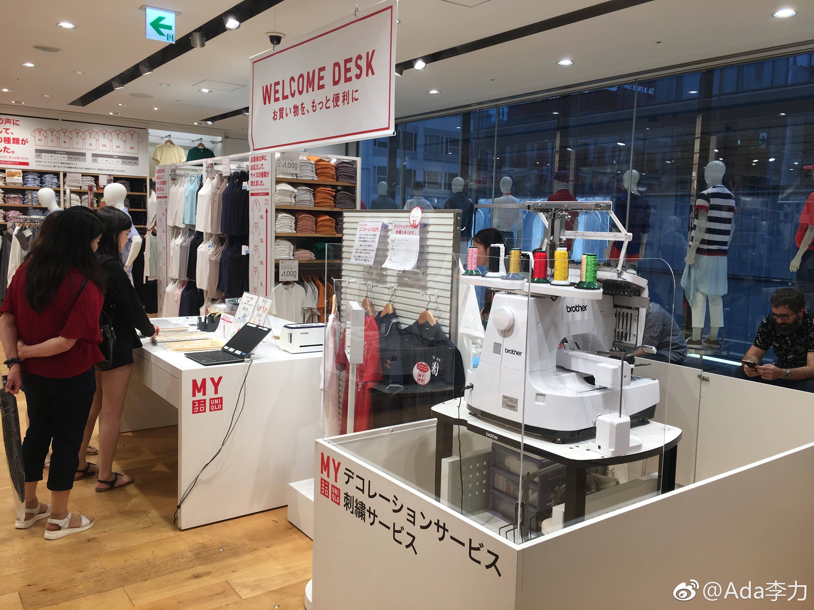
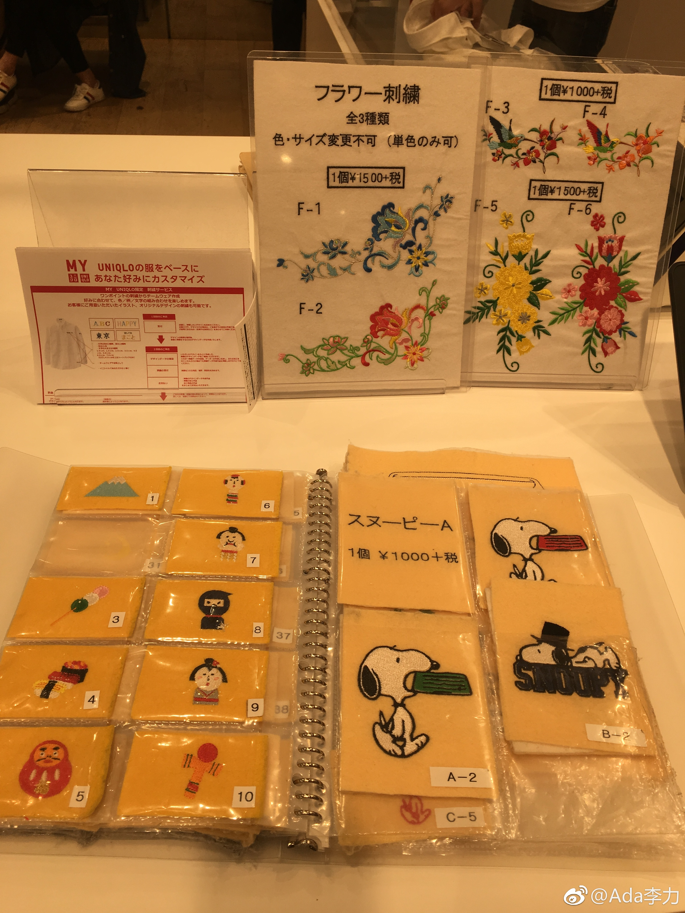

住处附近200米就有个12层优衣库，但因为每层面积不大，感觉总面积并不比国内的大。
衣服种类，款式和价格也跟国内差别不大。有底气这么说，是因为北京办公室所在的万达广场里有优衣库，我每周逛一趟的频率。
值得提的是日本优衣库提供定制化的刺绣服务。12层有个面料体验区，用做内衣的那种面料制成巨大的屏风。
最惊奇的是满楼都听到中国话，这里难道是国人在银座的必逛景点么？
衣服种类，款式和价格也跟国内差别不大。有底气这么说，是因为北京办公室所在的万达广场里有优衣库，我每周逛一趟的频率。
值得提的是日本优衣库提供定制化的刺绣服务。12层有个面料体验区，用做内衣的那种面料制成巨大的屏风。
最惊奇的是满楼都听到中国话，这里难道是国人在银座的必逛景点么？

- 
- 